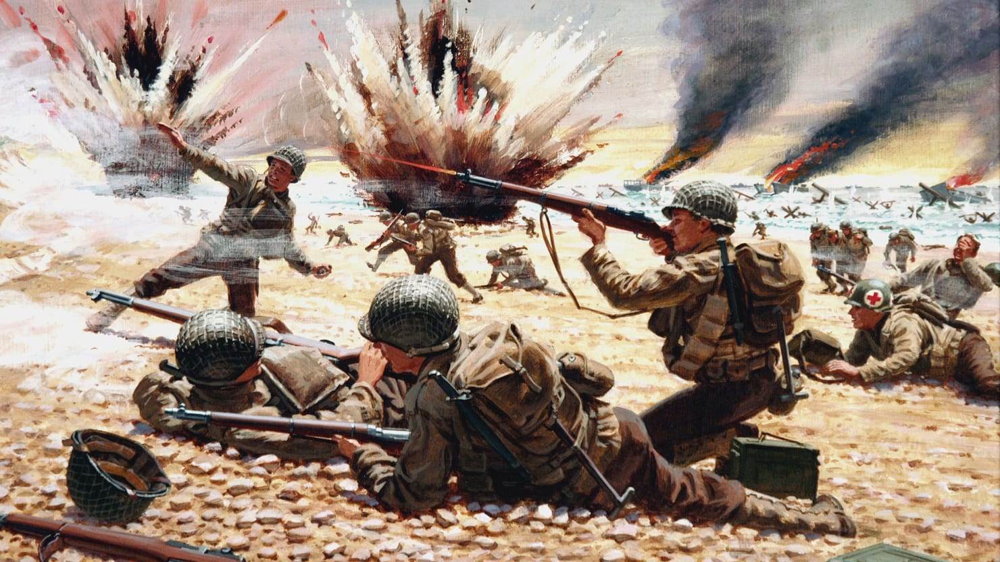
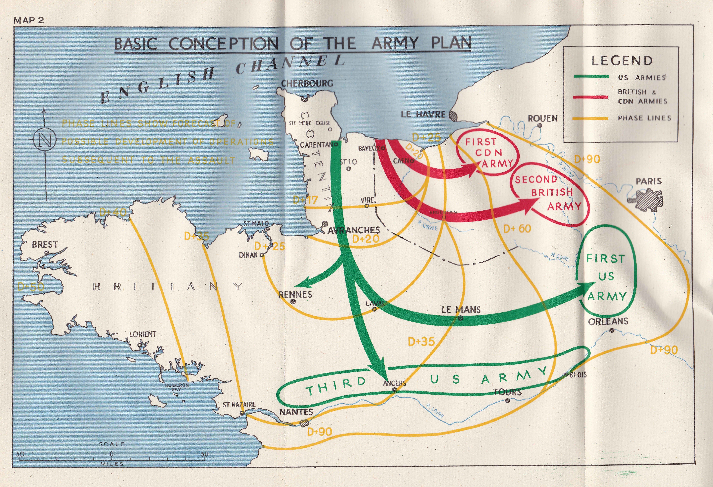

The Normandy landings were the landing operations and associated airborne operations on Tuesday, 6 June 1944 of the Allied invasion of Normandy in Operation Overlord during World War II. Codenamed Operation Neptune and often referred to as D-Day, it was, and still is, the largest seaborne invasion in history. The operation began the liberation of France (and later Western Europe) and laid the foundations of the Allied victory on the Western Front.
Planning for the operation began in 1943. In the months leading up to the invasion, the Allies conducted a substantial military deception, codenamed Operation Bodyguard, to mislead the Germans as to the date and location of the main Allied landings. The weather on D-Day was far from ideal, and the operation had to be delayed 24 hours; a further postponement would have meant a delay of at least two weeks, as the invasion planners had requirements for the phase of the moon, the tides, and the time of day that meant only a few days each month were deemed suitable. Adolf Hitler placed Field Marshal Erwin Rommel in command of German forces and of developing fortifications along the Atlantic Wall in anticipation of an Allied invasion. U.S. President Franklin D. Roosevelt placed Major General Dwight D. Eisenhower in command of Allied forces.
The amphibious landings were preceded by extensive aerial and naval bombardment and an airborne assault—the landing of 24,000 American, British, and Canadian airborne troops shortly after midnight. Allied infantry and armoured divisions began landing on the coast of France at 06:30. The target 50-mile (80 km) stretch of the Normandy coast was divided into five sectors: Utah, Omaha, Gold, Juno, and Sword. Strong winds blew the landing craft east of their intended positions, particularly at Utah and Omaha. The men landed under heavy fire from gun emplacements overlooking the beaches, and the shore was mined and covered with obstacles such as wooden stakes, metal tripods, and barbed wire, making the work of the beach-clearing teams difficult and dangerous. Casualties were heaviest at Omaha, with its high cliffs. At Gold, Juno, and Sword, several fortified towns were cleared in house-to-house fighting, and two major gun emplacements at Gold were disabled using specialised tanks.
In June 1940, Adolf Hitler, Germany's leader, celebrated what he dubbed as "the most famous victory in history" with the fall of France. Over 338,000 Allied troops, including a significant portion of the British Expeditionary Force (BEF), were trapped along the northern coast of France during the Dunkirk evacuation (27 May to 4 June) and were successfully evacuated to England by British vessels.
However, by October 4, 1940, British planners reported to Prime Minister Winston Churchill that it would be difficult, even with support from Commonwealth countries and the United States, to reestablish a foothold in continental Europe anytime soon.
When the Axis forces invaded the Soviet Union in June 1941, Soviet leader Joseph Stalin began advocating for a second front in Western Europe. Churchill, fearing insufficient forces even with American aid and wary of costly frontal assaults like those in World War I, declined the proposal.
Various plans, including Operation Roundup and Operation Sledgehammer, were proposed for 1942-43, but the British deemed them impractical and unlikely to succeed. Instead, the Allies expanded their operations in the Mediterranean, launching the invasion of French North Africa in November 1942, the invasion of Sicily in July 1943, and invading Italy in September. These campaigns provided valuable experience in amphibious warfare for the Allied troops.
During the Trident Conference in Washington in May 1943, the decision was made to initiate a cross-Channel invasion within the following year. Churchill advocated for the main thrust to come from the Mediterranean theatre, but the Americans, providing the majority of men and equipment, disagreed.
British Lieutenant-General Frederick E. Morgan was appointed Chief of Staff, Supreme Allied Commander (COSSAC), to commence detailed planning for the invasion. The initial plans were limited by the availability of landing craft, most of which were already committed to operations in the Mediterranean and the Pacific.
The failure at the Dieppe Raid on August 19, 1942, influenced the decision not to directly assault a heavily fortified French seaport in the initial landing. Lessons from Dieppe underscored the need for adequate artillery, air support, especially close air support, and specialized ships capable of operating close to the shore.
British Lieutenant-General Frederick E. Morgan was appointed Chief of Staff, Supreme Allied Commander (COSSAC), to commence detailed planning for the invasion. The initial plans were limited by the availability of landing craft, most of which were already committed to operations in the Mediterranean and the Pacific.
The failure at the Dieppe Raid on August 19, 1942, influenced the decision not to directly assault a heavily fortified French seaport in the initial landing. Lessons from Dieppe underscored the need for adequate artillery, air support, especially close air support, and specialized ships capable of operating close to the shore.
Due to the short range of British aircraft like the Supermarine Spitfire and Hawker Typhoon, the number of potential landing sites was restricted, as comprehensive air support relied on having planes overhead for an extended period. Morgan considered four sites for the landings: Brittany, the Cotentin Peninsula, Normandy, and the Pas de Calais. However, Brittany and Cotentin were rejected due to the risk of the Germans cutting off the Allied advance at narrow isthmuses, leaving Normandy and Pas de Calais as the primary contenders.